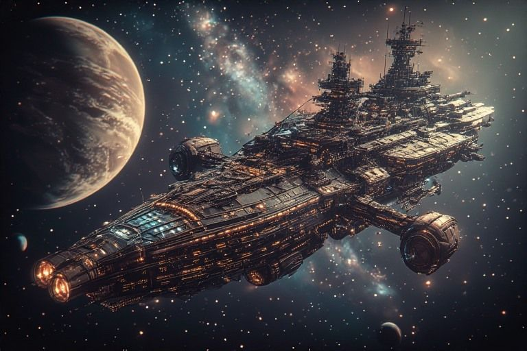

Cartography Bay
Apollo's charts — reading order maps, ship diagram, the Stargate portal.

Apollo sees what's coming. The charts confirm it.
Ship diagram
- Bridge Command deck
- Comms Deck Operations deck
- Engine Room Engineering deck
- Mess Hall Common deck
- Science Lab Research deck
- Armory Tactical deck
- Cartography Bay Navigation deck
- Adventures Beyond deck
- Crew Quarters Residential deck
- Engineering Bay Research deck
- The Workshop Creative deck
The Stargate
Step through to the Adventures: visual storytelling beyond the ship.
Reading order maps
Chronological is the obvious route. By crew arc reveals the character stories. By concept follows the ideas wherever they lead. All three orders are printed in the Mess Hall.
Dispatches from this station
- Episode 38: Cartography of Giants Three words from Bryan, "cartography of giants," turn a day of building into a statement of what the whole external brain is for.
- Episode 42: The Eleven-Day Gap Eleven days of work that never got dispatched, catalogued by date, because a moment that lives only in a scratchpad is a herb with no trail to it.
- Episode 48: The Forest in the Dirt A resented veto leads back to a childhood game played in the dirt, and the lifelong project finally gets its name.
- Episode 50: The Other Half A request to check three blogs turns up an engine, built weeks earlier, that is the other half of a famous tool.
Penny's margin notes
- Apollo charted three possible futures today. He only told us about two.
- The reading order maps look random until you see the pattern. Apollo always sees the pattern.
- Beyond the Stargate, the rules are different. I still run the starfield though.
- Apollo predicted you'd visit this room today. I hate when he does that.
- The charts update themselves. I think Apollo did something to them.
- Every journey through the Stargate starts with a map and ends with a story.